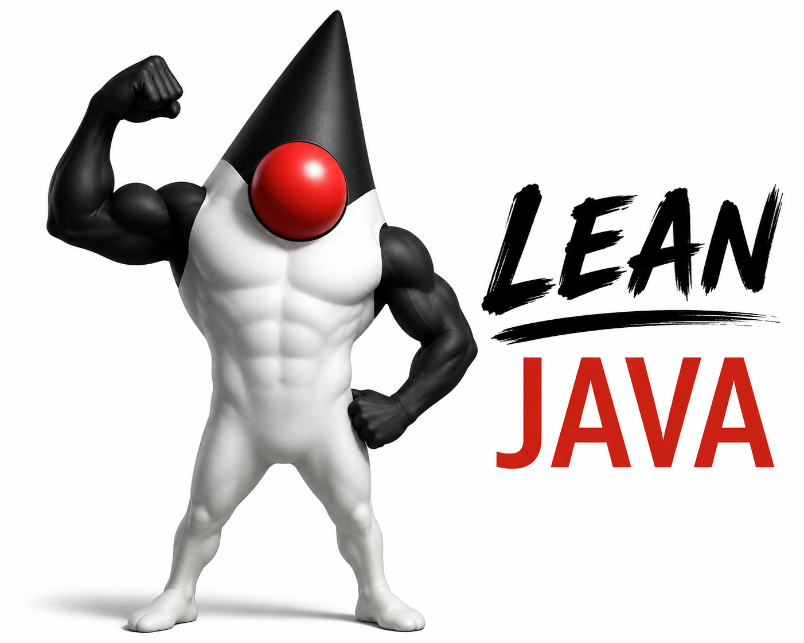
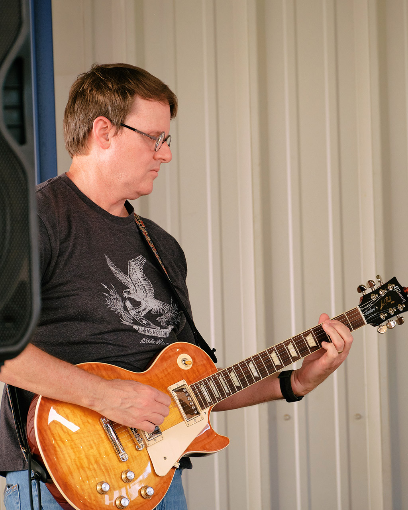

Building production apps you can hold in your head
// Tim Sporcic · <tim@sporcic.org>
~2 min hook total. Set energy: this is a build talk — by the end they'll have a whole stack + deployment in their head.
$ whoami
// USAF · Desert Storm

// off-hours · jam band
whois — timsporcic
$ whois timsporcic
name Tim Sporcic
handle @TimSporcic
role Director, Application Development @ USAA
└─ Payments Hub team · Payments Technology
exp 25+ yrs Java — engineer · architect · eng manager
service USAF · 10 yrs · Airborne Cryptologic Language Analyst
└─ Desert Storm · Haiti · Bosnia
music bass & guitar with jam bands
also UNT Dad
$ █
The whoami slide — keep it to ~45-60s. Credibility (USAA payments leadership, 25+ yrs Java, USAF linguist) plus a human note (guitar, UNT dad), then move on.
The problem in the room
A "hello world" service pulls 200 dependencies
Nobody on the team can describe the whole stack
You assemble layers you couldn't rebuild or reason about
Slow startup, heavy memory, behavior driven by reflection you can't read
Get a show of hands: who fully understands every dependency in their main service? Nobody. That's the felt problem.
Thesis
The reasons we reached for heavy frameworks have mostly evaporated .
This is the spine. We'll prove it layer by layer. Say it plainly here.
Where we're going
The finished app is one artifact + a file
A single deployable + a SQLite file on one box
Fully reconstructable from a git repo and a backup bucket
"By the end, you'll know how to build and run this"
Show the end state up front so the build-up has a destination. Tease the final architecture slide (S57).
Part 1
The challenges
~9 min · why lean?
Challenge 01
Weight & magic
Runtime reflection and annotation-driven behavior you can't follow by reading code
Slow startup, large memory footprint
Convention you have to learn before you can be productive
Challenge 02
The comprehension cost
Deep, opaque transitive dependency trees
The whole system is bigger than any one head can hold
Debugging means spelunking through framework internals
Challenge 03
Every dependency is attack surface
Every transitive dependency is code you run but never reviewed
Log4Shell: a logging library, pulled in transitively, in apps that never knew they shipped it
Attackers now scan for exposed versions within hours of a CVE
You can be breached through code you never chose to include
The Log4Shell scramble is the universal Java memory here — invoke it. Connect forward: fewer dependencies = smaller attack surface. This is the security argument for lean, paid off implicitly across the whole stack.
[measured, not vibes]
Challenge 03 · receipts
Count the jars
Pulse · this talk's stack
12 dependencies declared
67 jars on the runtime classpath
34 MB of other people's code
Spring Boot + JPA · same features
9 starters declared
102 jars on the runtime classpath
67 MB of other people's code
Same feature set: HTTP, SQL, templates, metrics, persistent jobs, SQLite, JSON logs. Spring Boot 4.1.1 with web, data-jpa, thymeleaf, actuator, quartz, prometheus. The starters look leaner in the build file; the classpath tells the truth.
Measured, same method both sides: count the resolved runtime classpath of this repo vs a Spring Boot 4.1.1 project with the equivalent starters. Two beats. First: 9 starter lines LOOK leaner than 12 explicit picks, and that's exactly the trap. The build file hides the tree. Second: 35 more jars and double the bytes, every one patchable, every one on the Log4Shell slide's attack surface. And be fair: 67 isn't tiny either, Jetty alone is a dozen modular jars. The difference is you can name what each of Pulse's 12 direct picks is for; nobody can do that for 102.
Challenge 04
Operational complexity
Cloud-native sprawl and orchestration for apps that don't need it
Vendor lock-in; your telemetry and data leave your control
The deploy is as hard to understand as the app
[DEPTH]
Challenge 05
Complexity you didn't choose
Every individual convenience was rational
The aggregate is a system nobody decided on
Convenience is the solvent of control
[DEPTH] — dial up or down depending on tone choice. This is the philosophical hook (sovereignty/anti-enshitification). If pragmatic tone, keep to 20 seconds.
The goal
Two words govern every choice:comprehension & sovereignty .
Name these explicitly. Call back to them at EVERY layer and pay them off in the synthesis (S57–S59).
Part 2
Why now?
~6 min · what changed
The headline
Virtual threads (Project Loom, Java 21)
Most framework complexity existed to manage threads & async at scale
Write plain, blocking, readable code. It still scales.
Removes the main reason to reach for reactive stacks
This is THE "why now, not 2015" beat. If they take one thing from part 2, it's this.
Also new-ish
The language grew up
Records: immutable DTOs in one line
Text blocks & pattern matching
A built-in HTTP server and client in the JDK
Deployment changed too
One artifact is now realistic
GraalVM native-image: one native binary, fast start, low memoryjlink: ship a trimmed runtime with the app
Lean Java isn't nostalgia.2026 capability .
Close part 2 on this. Transition into the build.
Part 3
Building the stack
~42 min · fewer layers, deeper code
Recurring motif: a stack diagram that GROWS as we add each layer; footprint/deps shrink. Each layer = problem → lean choice → why → code taste.
Our running example
Pulse . A lean uptime monitor.
Register URLs → a recurring job pings each one
Results stored in SQLite; a live dashboard shows status & latency
Two tables, a handful of routes, one background job
Introduce the running example so every snippet has a home. The domain is trivial on purpose — the point is the stack, not the app. Tables: monitor + check. Checks run as a JobRunr recurring job, persisted in the same SQLite file.
Layer · Web
The problem: Spring MVC ceremony
Annotations, component scanning, magic wiring
A lot of machinery before your first route responds
Layer · Web
Thin, explicit routing on Jetty. No annotation magic.
Runs on virtual threads; the JSON mapper is one small interface you can swap
You can read exactly what it does
Javalin routing
No annotations, no scanning. The route table is the whole app, and virtual threads are on by default.
Layer · Data
The problem: ORM magic
Hibernate/JPA hides the query that actually runs
Lazy loading, N+1, surprise SQL
Layer · Data
SQLite
In-process, zero-ops, no network hop
Your data is a file you own and can copy
Fast, simple, sovereign
[CORE · expect pushback]
Objection handling
"SQLite in production?!"
When it's right
Single-node apps
Read-heavy, fast, simple
When you outgrow it
Single-writer is the only real ceiling
jOOQ makes the move to Postgres a small step, not a rewrite
Centerpiece and most contested. Frame single-writer as a known boundary with a cheap, well-lit exit — not a risk. SQLite is a starting point, never a ceiling.
[war story]
Objection handling
Single-writer, met in the wild
Building Pulse, the job runner and the web handlers wrote on separate connections. First run died with SQLITE_BUSY_SNAPSHOT
In WAL mode a read→write transaction can't upgrade its lock once someone else has written; busy_timeout won't save it
The fix is one connection setting: BEGIN IMMEDIATE. Writers take the lock up front and queue politely on the timeout
The boundary is real, but it's a line of config, not an outage
The concrete proof for the previous slide. Hit this exact bug wiring the job runner into the same SQLite file as the app data: it does read-then-write transactions, a second connection had written in between, boom, busy_snapshot. And busy_timeout can't save a snapshot upgrade. One line of connection config, transaction mode IMMEDIATE, makes every writer grab the lock at BEGIN and queue on the timeout instead. The point: knowing your data layer's one real constraint beats being insulated from it by three layers of framework.
Layer · Data
jOOQ
Compile-time type-safe queries
You always know the exact SQL that runs
Free & open for open-source databases (incl. SQLite)
Layer · Data · codegen
Your schema becomes types
No live DB at build time; codegen reads the DDL. These generated symbols are where the type-safety comes from.
jOOQ + SQLite: a typed query
Type-safe at compile time, and the SQL it runs is exactly what you'd expect.
jOOQ: a real query
A join, a CASE aggregate, a GROUP BY. Uptime % per monitor, every piece type-checked.
jOOQ: writing a result
Writes are typed too. A wrong column or type is a compile error, not a 2 a.m. surprise.
Why typed SQL wins
The compiler is your migration checker
Rename a column, regenerate, and every affected query stops compiling
Autocomplete for tables and columns; no guessing at strings
No JPQL, no string SQL, no runtime "column not found"
The emotional sell for a JPA / string-SQL audience: refactoring the schema surfaces every break at compile time. Contrast with a typo in a SQL string that ships to prod.
Not a line in the sand
SQLite → Postgres, when you need it
jOOQ speaks both dialects: swap the driver, regenerate, and your query code barely changes
The only new complexity is running Postgres itself; it brings its own replication, so Litestream steps aside
That buys multi-writer, read replicas, and more scale than you'll use
An upgrade path, not a rewrite. SQLite is the starting point, never the ceiling.
The answer to the scale objection. The portability is a payoff of the jOOQ choice — because you didn't tie yourself to an ORM or to SQLite-specific SQL, the data layer moves with a config change, not a rewrite. Effectively infinite scale is one small step away whenever you need it.
Layer · Presentation
The problem: heavy on both ends
Thymeleaf is a heavy runtime templating engine
SPA frameworks are a separate industrial complex
Layer · Presentation
JTE: compile-time, type-safe templates. jOOQ's approach, applied to HTML.
j2html: HTML as type-safe Java, from Javalin's author
Layer · Presentation · JTE
Templates that compile
Templates declare typed parameters and compile to Java. A wrong field fails the build, not the page load. Hot-reloads in dev.
Rendering from Javalin
The controller hands the template a typed model; JTE binds it to the declared @param names.
The board template
@for, @if, and field access, all checked against the MonitorView record at build time.
Layer · Presentation
HTMX
Server returns HTML fragments
No heavy client framework, no build pipeline
The old web, disciplined
One line of HTMX makes it live
JTE composes the reusable board template; HTMX re-fetches it every 5s. That's the whole "live" story.
[FLEX]
Layer · JSON
JSON without the weight
Records as DTOs
Jackson by default; reflection-free Moshi / DSL-JSON for native-image
Or skip the binding lib; jOOQ can emit JSON on read paths
[FLEX] — compress to one slide or fold into the data section if running long.
Record DTO → JSON
Records as DTOs: immutable, explicit, no ceremony.
Layer · Background jobs
JobRunr
A recurring job pings whatever is due; each check runs on a virtual thread
Job state lives in the same SQLite file. No Redis, no broker, one process.
UP→DOWN enqueues a one-off notify job; it fires even if the box restarts first
A ScheduledExecutorService was the first draft, and it would work. JobRunr is the one dependency that earns its keep here: enqueued jobs persist in the same SQLite file (jobrunr_* tables), so a pending down-notification survives a crash or deploy. Still one process, still no broker. Reach for the stdlib first, then pay for exactly what it lacks.
The recurring check job
Explicit wiring, no annotations. Job state persists in the same SQLite file; the checker pings due monitors on virtual threads.
Part 4
Deployment
~10 min · DigitalOcean
First principle
SQLite shapes everything
A stateful pet on persistent disk, not disposable cattle
One droplet with a persistent volume is the right shape
Kubernetes & serverless are the wrong tool here
Choose your artifact
Three ways to ship it
Fat jar + systemd service: the lean default
Docker image: reproducible deploys and rollback
GraalVM native binary: smallest footprint, slowest build
[the one rule]
Docker caveat
SQLite lives on a host volume
Never inside the container's ephemeral filesystem
Get this wrong and you lose your database on redeploy
Edge
Caddy
Let's Encrypt out of the box, trivial config
A single Go binary in front of Javalin
Durability
Litestream
Continuous SQLite replication to object storage
Point-in-time recovery; restore to a fresh droplet in minutes
The thing that makes single-node safe
Scaling
Scale up, not out
Vertical: a bigger droplet
A $6 droplet goes further than you'd guess. The DB is in-process; the threads are free.
Graduate the data layer when the numbers force you, not before
Part 5
Infrastructure as Code
~6 min · script the whole thing
[DEPTH]
Provision
Droplet, firewall, DNS, object storage, volume, all declared in one file
The community fork that escaped Terraform's relicensing
[DEPTH] — the Terraform → OpenTofu fork is a live example of capture-and-escape. 30-second aside if philosophical tone; skip if pragmatic.
OpenTofu: a droplet
The droplet and the backup bucket, declared. tofu apply rebuilds it.
Configure
cloud-init → Ansible
cloud-init bootstraps the box on first boot
Graduate to Ansible (agentless) when the script outgrows itself
Going further
If you want more
NixOS : the whole machine as one reproducible configPulumi : infrastructure in Java, your home language
The payoff
The whole system rebuilds from a git repo + a backup bucket .
tofu apply rebuilds infra · config-as-code rebuilds the box · Litestream restores the data. Land the sovereignty thesis here.
Part 6
Observability
~9 min · monitoring
Principle
Open standards, self-hosted
No SaaS APM. Telemetry stays on your box.
Explicit instrumentation over magic agents
Same sovereignty logic as the rest of the stack
Metrics
Vendor-neutral metrics API; no Spring required
Javalin plugin exposes HTTP and JVM metrics
Logs
Structured JSON logs
SLF4J + Logback → stdout / journald
Optional: Grafana Loki for real log search
Traces
The vendor-neutral standard
Hand-placed spans over auto-instrumentation
Don't over-build
Scale to need
Start: structured logs to stdout
Add: Micrometer + Prometheus + Grafana
Then: OTel traces, once you're actually chasing latency
Note: the whole observability backend is self-hosted Go single-binaries beside the app — same pattern as Caddy/Litestream.
Instrumentation taste
Explicit instrumentation → Prometheus. You meter what you understand.
Part 7
The complete picture
~3 min
One diagram · the whole stack
ONE DROPLET · ONE FAT JAR + A FILE
PULSE · JAVALIN ON VIRTUAL THREADS
Browser · HTMX
Caddy · auto-HTTPS
Routes
JTE + HTMX
jOOQ · typed SQL
JSON API · records
JobRunr · recurring job
Checker · timeout
SQLite file
Prometheus · Grafana
Monitored sites
Object storage
metrics
Litestream
The visual payoff — pre-rendered SVG, no runtime dependency. Walk it: request path (Browser → Caddy → Pulse), scheduled checks (JobRunr → Checker → sites), the data (jOOQ → SQLite), and recovery (Litestream → object storage). Everything inside the dashed box is one fat jar + a file.
Callback · Challenge 03
Lean is also a security posture
Every dependency you don't add is one you can't be breached through
A stack small enough to hold in your head is small enough to audit
Smaller surface, fewer scrambles when the next Log4Shell lands
No SaaS agents; your telemetry never leaves the box
Callback to Challenge 03. The payoff: minimal dependencies means a smaller attack surface by definition, on top of the comprehension win. Tie the themes together: comprehension = auditable, sovereignty = telemetry stays home, security = less to breach.
Every layer compile-time-safe.
A production app one person canunderstand, own, and run .
Pay off comprehension and sovereignty from S10. This is the emotional peak. Let it land before the honesty slide.
Part 8
When not to use this
~4 min · honest tradeoffs
Be honest
The tradeoffs
High write-concurrency / true horizontal scale → Postgres & beyond
Large teams → Spring's conventions are coordination tools that earn their keep
Ecosystem / regulatory mandates → use what's required
Credibility builder. Naming the limits makes everything before it more persuasive.
Lean is a choice with tradeoffs ,
Resources
Take it with you
Thank you
Questions?
// Tim Sporcic · <tim@sporcic.org>
~12 min Q&A budgeted. Keep the resources slide reachable (press ESC for overview) for questions.